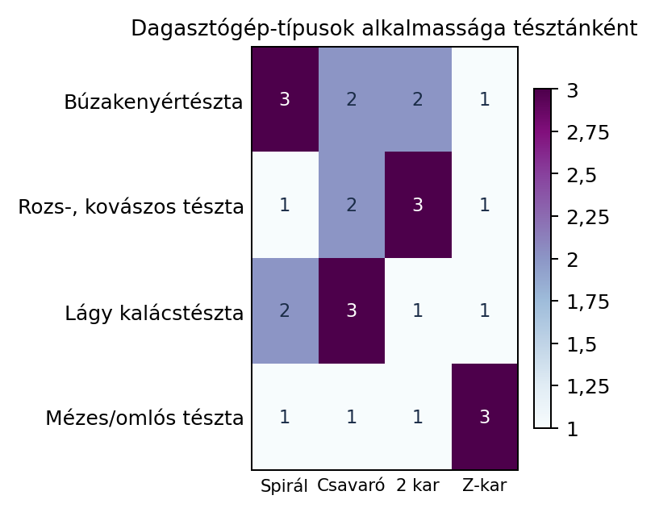

A pékség hajnali műszakjában gyakran egyszerre készül többféle tészta: kemény, rugalmas kenyértészta, lágyabb kalácstészta, omlós alap vagy habos töltelék. Ha a pék mindegyikhez ugyanazt a gépet próbálja használni, előbb-utóbb túlmelegszik a tészta, szakad a sikérváz, vagy a gép túlterhelt lesz. Ezért a gép kiválasztása nemcsak kényelmi kérdés, hanem a tészta minőségének, a munka biztonságának és a gép élettartamának alapfeltétele.
A következő hőtérkép azt mutatja, hogy az egyes tésztatípusokhoz melyik dagasztógép-család illik leginkább. Az 1–3 skála tanulási példa: a 3 azt jelenti, hogy az adott géptípus jól bevált az adott tésztához, az 1 pedig azt, hogy ritkán vagy csak kiegészítésként használjuk.

A táblázatot olvasva látszik, hogy a búzakenyértésztához a spirálgép, a rozs- és kovászos tésztához a kíméletes kétkaros gép (a hőtérképen „2 kar”), a lágy, dúsított kalácstésztához a csavarodagasztó (a spirálgép csak óvatosan, a túldagasztás veszélye miatt), a mézes és omlós tésztákhoz pedig a Z-karú gép az elsődleges választás. A kétkaros gép a dúsított kalácstésztához kevésbé való – ezt a lenti valós eset is mutatja. Az értékek azonban csak irányadóak: a gépkönyv és az üzemi technológiai lap mindig felülírja ezt a vázlatot.
Definíció. A dagasztógép olyan élelmiszeripari munkaeszköz, amely mechanikai munkával keveri össze a tészta nyersanyagait, és közben a gluténvázat fejleszti, azaz a tésztát rugalmas, jól formázható állapotba hozza.
Definíció. A keverőgép ezzel szemben elsősorban összekever, bekever vagy habosít, de nem feltétlenül végez teljes dagasztó munkát. A határ gyakran folyékony vagy lágyabb anyagoknál elmosódik, ezért a péknek a gépkönyvben megadott rendeltetést kell követnie.
A dagasztó- és keverőgépek felépítése sok közös elemből áll. A hajtás, a csésze, a szerszám, a vezérlés és a védőrács együtt határozza meg, milyen tésztát kapunk.
Gépbiztonság. A dagasztógép védőrácsát, reteszelését és vészleállítóját üzemkezdés előtt mindig ellenőrizni kell. A gépet csak az kezelheti, aki a betanításon részt vett, és ismeri a gépkönyv biztonsági fejezetét. A védőberendezés kiiktatása tilos.
A gépek konkrét biztonsági követelményeit a gépekre vonatkozó uniós szabályozás (gépirányelv, illetve az új gépekre vonatkozó uniós rendelet – (ellenőrizendő: pontos szám és átmeneti időszak)) és az élelmiszeripari gépekre vonatkozó harmonizált szabványok tartalmazzák. A pék dolga nem a jogszabályok szövegének ismerete, hanem a gépkönyvben leírt biztonsági előírások betartása.
A spiráldagasztó a klasszikus kenyértészta-gép. A csészében függőleges vagy enyhén döntött spirál alakú kar forog, miközben maga a csésze is lassan körbefordul. A tészta a csésze falán felfutva, a spirál karon lefelé csúszva folyamatosan átfordul, nyúlik és gyúródik.
Tulajdonságok. - Erősen fejleszti a sikérvázat, ezért rugalmas, jól géppel feldolgozható tésztát ad. - A dagasztási hőmérséklet emelkedhet, ezért hosszú dagasztásnál fontos a vízhőmérséklet helyes megválasztása. - Két fokozatban dolgozik általában: az első lassú a bekeverésre, a második gyors a tésztafejlesztésre.
Számítási példa a fokozatok értelmezéséhez. Egy spirálgép lassú fokozata 60 fordulat/perc, a gyors fokozata 120 fordulat/perc. Ha a gépkönyv szerint 3 perc lassú + 5 perc gyors dagasztás kell, akkor a szerszám lassú fokozaton fordulatot, gyors fokozaton fordulatot tesz meg. Az ilyen ellenőrzés segít megérteni, miért nem mindegy, hogy valaki csak időre indítja a gépet: a motor fordulatszáma és a fokozat is befolyásolja a tényleges dagasztómunkát.
Figyelem. A spirálgép nagy nyírása miatt a lágy, dúsított tésztáknál könnyen túldagasztás következhet be. A túldagasztott tészta ragad, szétfolyik, a késztermék alacsony, lapos lesz.
A csavarodagasztó (más néven csavargó dagasztó, angolszász területen gyakran twist mixer) hasonlít a spirálgéphez, de a szerszám nem spirál, hanem hajlított, csavaró kampó vagy villás kialakítású. A csésze itt is forog, de az átfordulási irány és a szerszám geometriája miatt kíméletesebb, hosszabb dagasztást tesz lehetővé.
Tulajdonságok. - Jól használható lágyabb, cukros, zsiradékos tésztákhoz, kalácsfélékhez. - Kisebb hőmérséklet-emelkedést okozhat, mint az agresszívabb spirálgép, de ez gép- és fokozatfüggő. - A csavarodagasztó gyakran több fokozattal rendelkezik; a pék a bekeveréshez lassú, a kifejlesztéshez rövid gyors fokozatot alkalmaz.
Megjegyzés. A „csavaró” kifejezés nem jogi vagy szabványos gépkategória, hanem üzemi gyakorlati elnevezés. A pontos megnevezést és a gép képességeit mindig a gépkönyv és a gyártó adatlapja szerint kell érteni.
A kétkaros dagasztó gép (nem azonos a villás/csavaró géppel) csészéje a hagyományos típusokon lassan forog – a karok mozgása viszi (szabadon futó csésze), vagy külön hajtás forgatja –, a két dagasztókar felváltva emel és hajt (ellenőrizendő: a gép típusa és gépkönyve). A tészta a karok között átfordul, szakadozás nélkül nyúlik.
Tulajdonságok. - Kíméletes dagasztás, lassú, hosszabb érésű tésztákhoz, rozskenyérhez, kovászos tésztákhoz kiváló. - A sikérvázat fokozatosan fejleszti, kevésbé melegíti a tésztát. - Nehéz, kemény tésztákhoz önmagában nem mindig elég; ilyenkor előgyúrás vagy kiegészítő dagasztás lehet szükséges.
Példa. Rozskenyér gyártásához a pék gyakran kétkaros gépet választ, mert a rozs fehérjéi nem alkotnak összefüggő sikérhálót, és a rozstészta nem viseli jól a spirálgép erős nyírását. (Allergén szempontból a rozs is glutént tartalmazó gabona – a „nem alkot sikérhálót” nem jelent gluténmentességet.) A rozstészta nem a gluténváz miatt lesz jó, hanem a pentozánok és a kovász savassága miatt, ezért kíméletes keverésre van szükség.
A Z-karú gépben álló csészében két vízszintes, Z alakú kar forog egymással szemben. A karok a tésztát a csésze alján komoly erővel gyúrják, gyorsan homogenizálják.
Tulajdonságok. - Erős gyúróhatás, ezért alkalmas keményebb, kevésbé levegős tésztákhoz: mézeskalács, omlós tészta, linzer, leveles tészta alaptésztája (ellenőrizendő: gépkönyv). - A tésztát gyorsan felmelegítheti, ezért zsiradékos, hűtött tésztáknál rövid bekeverést és hűtött nyersanyagokat kell alkalmazni. - Nehezebb tisztítani, mert a Z-karok alá is benyúlnak, de a megfelelően kialakított csésze és a gépi billentési lehetőség ezt megkönnyíti.
Kapcsolódás a mézeskalácshoz. A mézeskalács-tészta sűrű, ragadós, és a kémiai lazítószerek miatt nem szabad hosszan dagasztani. A Z-karú gép itt elsődleges választás, mert rövid idő alatt, nagy erővel keveri homogénné az anyagot. Ezt a gondolatot továbbvisszük az A mézeskalácsüzem helyiségei, gépei és szerszámai alfejezetbe.
A négy géptípus különbsége a szerszám alakjában és a csésze mozgásában van; ezt a következő sematikus metszetek foglalják össze. A spirálgépnél (1) a szaggatott nyilak a tészta útját mutatják: a forgó csésze falán felfut, a spirálkaron lefelé csúszik, és a törőrúdnál nyúlik. A csavarodagasztónál (2) a csésze szintén forog, de a hajlított kampó kíméletesebben dolgozik. A kétkaros gépnél (3) a csésze lassan forog (a karok mozgása vagy külön hajtás viszi), a két kar felváltva emel és hajt (szaggatott ellipszis pálya). A Z-karú gépnél (4) a billenthető teknőben két vízszintes Z-kar forog egymással szemben.
A rajzon a védőrács az áttekinthetőség kedvéért nem látszik, a valóságban azonban mindegyik gép csak zárt, reteszelt védőráccsal működhet. A gépválasztásnál a szerszám és a csésze mozgása dönt: minél erősebb a nyírás (spirál), annál inkább a búzakenyértésztához való, minél kímélőbb (kétkaros), annál inkább a rozs- és kovászos tésztához. A HTML-változatban a négy géptípus egyenként kiemelhető.
Definíció. A gyorskeverő olyan nagy fordulatszámú keverőgép, amely rövid idő alatt homogenizál folyékony vagy félfolyékony anyagokat: élesztőoldatot, tojáshabot, krémalapot, lazítószeres tölteléket. Nem teljes kenyértészta-dagasztásra való.
A gyorskeverő szerszáma gyakran keverőtárcsa vagy lapát. A fordulatszám nagy, ezért a keverési idő rövid. A gép előnye, hogy gyorsan old fel anyagokat és egyenletesen eloszlatja a hozzávalókat.
Tulajdonságok. - Folyékony hozzávalóknál megelőzheti a dagasztógépet: élesztőt vízben felszuszpendál, sóoldatot kever, tojáslevet készít. - Kisebb tételeknél gyors, de habosításhoz nem mindig alkalmas, mert a tárcsa nem visz be elég levegőt.
A bolygóműves keverőgép (köznyelvben sokszor „gyorskeverő”, de helyesebb „keverőgép”) a cukrászati és finom pékárus gyakorlatban elterjedt. A szerszám a saját tengelye körül forog, és közben a csésze középpontja körül is kering. Ez a bolygómozgás biztosítja, hogy a habverő vagy lapát a csésze minden pontját elérje.
Eszközei. - Dagasztókar: rugalmas, élesztős tésztákhoz, kisebb tételű finom pékáruhoz. - Lapát: keveréshez, omlós tésztához, töltelékekhez. - Huzalhabverő: tojáshab, krém, felvert töltelék készítéséhez.
A bolygóműves keverőgép nem helyettesíti a nagy spirál- vagy csavarodagasztót: a tésztafejlesztéshez szükséges nagy energiabevitelre a kis keverőkar nem alkalmas. Nagyobb termelésben csak segédgép, nem fő dagasztó.
A habverőgép a keverőgép egyszerűsített változata: elsősorban huzalhabverőt hajt, és nagy sebességgel levegőt visz a masszába. Használata tojáshab, tejszínhab, fehérjefelvert krémek készítéséhez szükséges. A pék habverőgépbe dagasztókart nem szerel, mert a tésztát az ellenállás miatt tönkretenné, és a gép is túlterhelt lenne.
Gépbiztonság. A bolygóműves keverőgépnél is reteszelt védőrács vagy fejlehajtási biztosítás szükséges. A habverőgép forgó huzalverője súlyos sérülést okozhat, ezért a védőrács itt sem iktatható ki. A szerszám cseréjét csak leállított, áramtalanított állapotban szabad elvégezni.
A bolygóműves keverőgép részeit és a három szerszámot a következő rajz mutatja. A gépfej (1) hajtja a szerszámot, a csészeemelő kar (2) a csészét (3) a szerszámhoz emeli, a reteszelt védőrács (4) nyitásakor a gép leáll, a sebességválasztóval (5) a fokozat állítható. A szerszámokat alakjukról ismered fel: a horog alakú dagasztókar (6) élesztős tésztához, a lapos, keretes lapát (7) omlós tésztához és töltelékhez, a huzalhabverő (8) habhoz és krémhez való. Jobbra a bolygópálya: a szerszám a saját tengelye körül forog és közben a csésze közepe körül kering, így a csésze teljes felületét bejárja.
A vészleállító (9) vészhelyzetben megállítja a gépet, de nem választja le: szerszámcsere és tisztítás előtt a gépet a főkapcsolóval kell kikapcsolni vagy a hálózati dugaszt kihúzni, és meg kell várni a szerszám teljes megállását. A HTML-változatban a szerszámokra mutatva megjelenik a hozzájuk illő tészta vagy massza.
A gép mindennapi használata során a péknek a következőket kell látni a gépen:
Szabály. A dagasztógép fokozatát mindig a tészta fajtájához, a tétel nagyságához és a gyártói előíráshoz kell megválasztani. A rossz fokozat nemcsak a tésztát rontja el, hanem a gép hajtását is túlterhelheti.
Példa. Kenyértészta dagasztásakor a pék lassú fokozaton bekeveri a lisztet, vizet, kovászt, élesztőt és sót, majd gyors fokozaton fejleszti a gluténvázat. Ha már a bekeverést is gyors fokozaton kezdi, a lisztpor kicsapódhat a csészéből, a só egyenetlenül oszlik el, és a tészta hirtelen felmelegszik.
Definíció. A töltési tényező a csésze hasznos térének az a hányada, amelyet a dagasztandó tészta térfogata elfoglalhat. Képlettel:
ahol a tészta térfogata, a csésze gépkönyv szerinti hasznos térfogata.
Szabály. A pék soha ne töltse tele a csészét a tetejéig. A dagasztáshoz hasznos légtérre van szükség, hogy a tészta átforduljon, és hogy a motor ne terhelődjön túl. Jellemző tanulási példaérték a kemény tésztánál 0,4–0,6, lágyabb tésztánál 0,5–0,7; a tényleges értéket a gépkönyv és az üzemi technológiai lap határozza meg (ellenőrizendő: gépkönyvi adat).
Példa. Egy 100 liter hasznos térfogatú csészébe kemény kenyértészta dagasztásakor töltési tényezővel liter tészta fér. A nyers tészta sűrűsége kb. 1,0–1,2 kg/l (tanulási példa, ellenőrizendő), így 50 liter tészta kb. 50–60 kg. A gépkönyvek a kapacitást többnyire kg tésztában vagy kg lisztben adják meg; ezt használjuk az Anyagnorma, rendelésből anyagszükséglet és dagasztásonkénti anyagmennyiség alfejezetben (ellenőrizendő: gépkönyv). A pontos liszt- és vízmennyiséget az anyagnorma-számítás adja meg. Ezt a kérdést a Termelésszervezés, ütemidők és kapacitásszámítás alfejezetben folytatjuk.
Továbbvitt eredmény. A géptípus, a fokozat, a töltési tényező és a védőberendezések fogalma itt alapozza meg a Dagasztógépek biztonságos üzemeltetése, gépápolás és folytonos tésztakészítés, az A mézeskalácsüzem helyiségei, gépei és szerszámai és a Termelésszervezés, ütemidők és kapacitásszámítás alfejezeteket.
Egy kis pékségben a kenyérgyártáshoz addig használt kétkaros dagasztót, amíg át nem álltak dúsított kalácstészta gyártására. A pék a kétkaros gépben hosszan dagasztotta a lágy, vajas tésztát, de az nem lett megfelelően rugalmas, és a tészta ragadt. Kiderült, hogy a gép kímélő mozgása ehhez a dúsított tésztához nem visz be elég dagasztómunkát rövid idő alatt, a hosszú idő viszont felmelegítette a tésztát. Miután csavarodagasztóra váltottak, és a bekeverés lassú, a fejlesztés rövid gyors fokozatát használták, a tészta sima, fényes és jól formázható lett. A tanulság: a gép nem „jó” vagy „rossz”; a tésztához kell illeszkednie.
A dagasztási művelet minőségét közvetlenül a gép használata közben és a kidagasztott tésztán ellenőrizzük.
1. feladat (A) Sorolj fel négy dagasztógép-típust, és írd le mindegyiknél egy-egy tipikus felhasználási területét.
2. feladat (A) Nevezd meg a dagasztógép öt fő szerkezeti egységét, és írd le egy-egy mondatban a szerepüket.
3. feladat (B) Egy 120 liter hasznos térfogatú csészébe kemény kenyértészta kerül. A gépkönyv szerint az adott tésztához töltési tényező tartozik. Hány liter tészta betöltése megengedett? Mi történhet, ha töltési tényezővel töltenek?
4. feladat (B) Adott egy lágy kalácstészta és egy kemény kenyértészta. Válaszd ki mindkettőhöz a megfelelő dagasztógép-típust, és indokold a választást a tésztára gyakorolt hatás alapján.
5. feladat (C) Egy pékségben a bolygóműves keverőgép dagasztókarját használták tojáshab készítéséhez. Magyarázd el, mi a technológiai hiba, milyen következményei lehetnek a habra és a gépre, és mi a helyes megoldás.
6. feladat (D) Munka közben a dagasztógép védőrácsa kinyílik, de a gép nem áll le. Mi a teendő? Milyen gépbiztonsági ellenőrzést kellett volna elvégezni üzemkezdés előtt, és miért?
Spirálgép: kenyértészta, erős gluténfejlesztés. Csavarodagasztó: lágy, dúsított tészta. Kétkaros gép: rozskenyér, kovászos tészták. Z-karú: mézeskalács, omlós és leveles alap.
Hajtás: a motor és áttétel a szerszámot mozgatja. Csésze: az anyag tartálya. Szerszám: dagasztó vagy keverő elem. Vezérlés: indítás, fokozat, idő. Védőrács: reteszelt védelem.
liter. töltési tényezőnél liter lenne, ami túl közel van a teljes térfogathoz, ezért a tészta nem tud átfordulni, a motor túlterhel, a dagasztás egyenetlen.
Lágy kalácstészta: csavarodagasztó, mert kíméletesebb, elkerüli a túldagasztást. Kemény kenyértészta: spirálgép, mert erős gluténfejlesztést ad. Kétkaros gép is megfelelő lehet kenyérhez, ha kímélő folyamat a cél.
A dagasztókar nem visz be elég levegőt, a tojáshab nem lesz könnyű, stabil. A gép hajtása nagy ellenállást kap, túlterhelhet. Helyes megoldás: huzalhabverőt kell használni, és a habverőgép vagy bolygóműves keverő megfelelő fordulatszámát beállítani.
A gépet azonnal le kell állítani, lekapcsolni, és tilos használni, amíg a védőrács reteszelését meg nem javították. Üzemkezdés előtt a védőburkolat, a reteszelés és a vészleállító próbáját kellett volna elvégezni, ahogy a Munkaeszközök és gépek biztonsága alfejezetben szereplő ellenőrzőlista is előírja.
A dagasztógép típusát a tészta jellegéhez kell igazítani. A spirálgép erős nyírású, kemény kenyértészta fejlesztésére való; a csavarodagasztó kímélőbb, lágy dúsított tésztákhoz alkalmas; a kétkaros gép hosszú, kímélő dagasztásra, például rozskenyérhez való; a Z-karú gép kemény, ragadós tészták gyors homogenizálására, így mézeskalácshoz is. A gyorskeverő folyadékok bekeverésére, a bolygóműves keverő dagasztókarral, lapáttal és huzalhabverővel sokcélúan, a habverőgép levegőbevitelre használható. A gép közös szerkezeti elemei a hajtás, csésze, szerszám, vezérlés és védőrács. A töltési tényező a csésze hasznos térfogatának kihasználását szabja meg, kemény tésztánál jellemzően 0,4–0,6 (tanulási példa, ellenőrizendő). Továbbvitt eredmény: a géptípus, fokozat, töltési tényező és védőrács fogalma épül tovább a Dagasztógépek biztonságos üzemeltetése, gépápolás és folytonos tésztakészítés, az A mézeskalácsüzem helyiségei, gépei és szerszámai és a Termelésszervezés, ütemidők és kapacitásszámítás alfejezetekben.